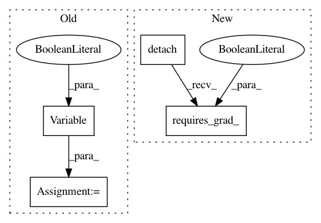

fc8951bbd36b14099e41fe171ab57e9f3937fe4f,gan_train.py,,calc_gradient_penalty,#Any#Any#Any#,98
Before Change
if cuda_available:
interpolates = interpolates.cuda()
interpolates = autograd.Variable(interpolates, requires_grad=True)
disc_interpolates = netD(interpolates)
After Change
alpha = alpha.cuda() if cuda_available else alpha
fake_data = fake_data.view(BATCH_SIZE, 3, DIM, DIM)
interpolates = alpha * real_data.detach() + ((1 - alpha) * fake_data.detach())
if cuda_available:
interpolates = interpolates.cuda()
interpolates.requires_grad_(True)
disc_interpolates = netD(interpolates)
In pattern: SUPERPATTERN
Frequency: 3
Non-data size: 4
Instances
Project Name: jalola/improved-wgan-pytorch
Commit Name: fc8951bbd36b14099e41fe171ab57e9f3937fe4f
Time: 2018-05-08
Author: waterstorm64@gmail.com
File Name: gan_train.py
Class Name:
Method Name: calc_gradient_penalty
Project Name: Zhaoyi-Yan/Shift-Net_pytorch
Commit Name: 8f6a6f153781d0908fb0904349aae844494026ea
Time: 2018-12-03
Author: yanzhaoyi@outlook.com
File Name: models/shiftnet_model.py
Class Name: ShiftNetModel
Method Name: backward_D
Project Name: jalola/improved-wgan-pytorch
Commit Name: fc8951bbd36b14099e41fe171ab57e9f3937fe4f
Time: 2018-05-08
Author: waterstorm64@gmail.com
File Name: congan_train.py
Class Name:
Method Name: calc_gradient_penalty